Let's begin a new program that will allow us to use the screen of our phone as a canvas and our finger as a pen! This tutorial will show you how to draw a line on the screen as the user drags a finger around.
You first need to set up your computer to be able to run your app, so first click on the "Set up your Computer" tab below and follow the instructions. Then you should continue with the "Digital Doodle" tab to make the app.
hAPPy Inventing!
There are two main components to the App Inventor environment: the Designer and the Blocks Editor.
The Designer allows you to add components to your app and lay out what it will look like.
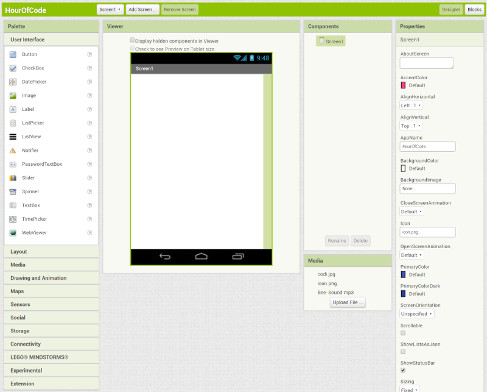The Blocks Editor allows you to code your app to give it functionality--that is, make it do stuff!
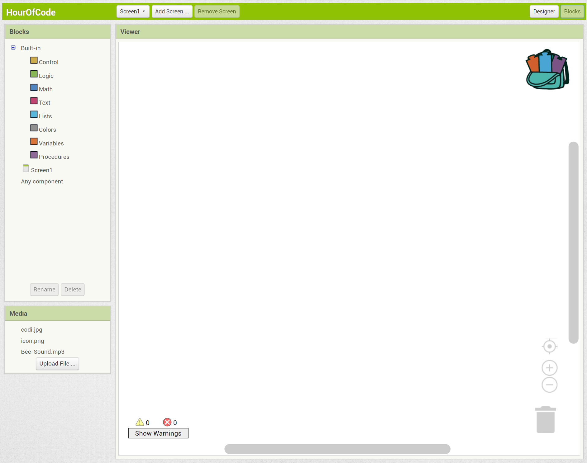You can toggle between the two screens using the buttons in the top right corner.
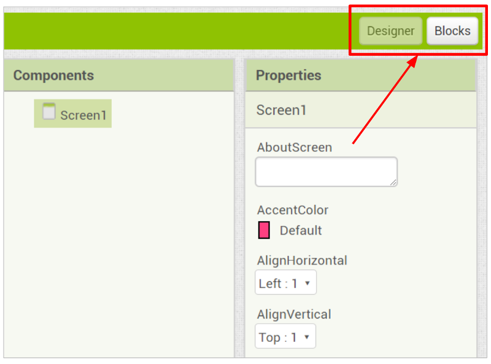Within the Designer, there are five windows: Palette, Viewer, Components, Media, and Properties.
The Palette is where all available components are. You can drag and drop any component from the Palette into the Viewer.
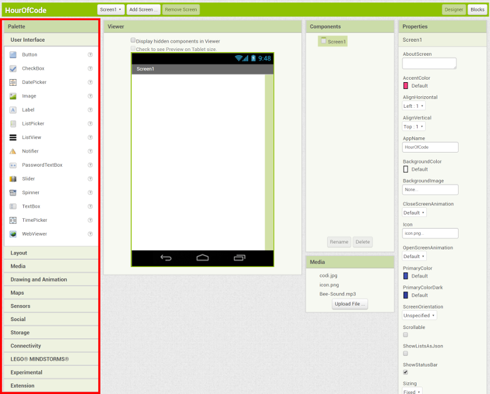The Viewer is where you can see what the app will look like and is where you drag components.
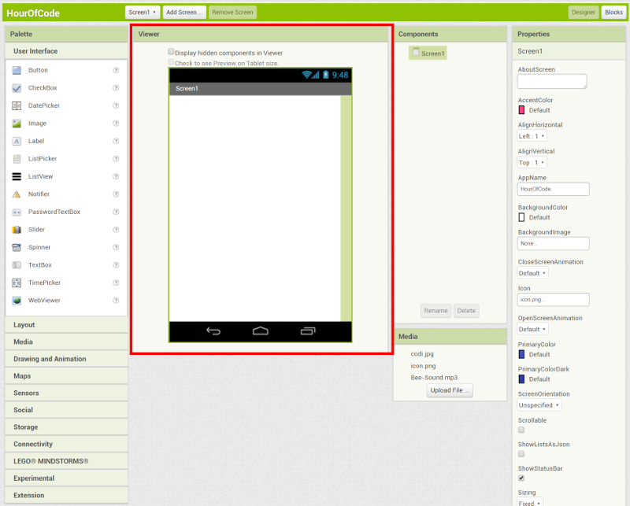The Components window shows all components that have been added to the app. Note that the Screen component is automatically listed as a component.
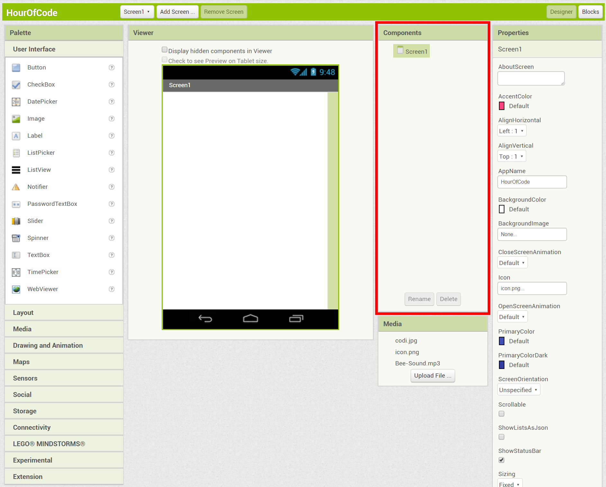The Media window shows any uploaded media files, like images and sounds. There should be three files already pre-uploaded for this app.
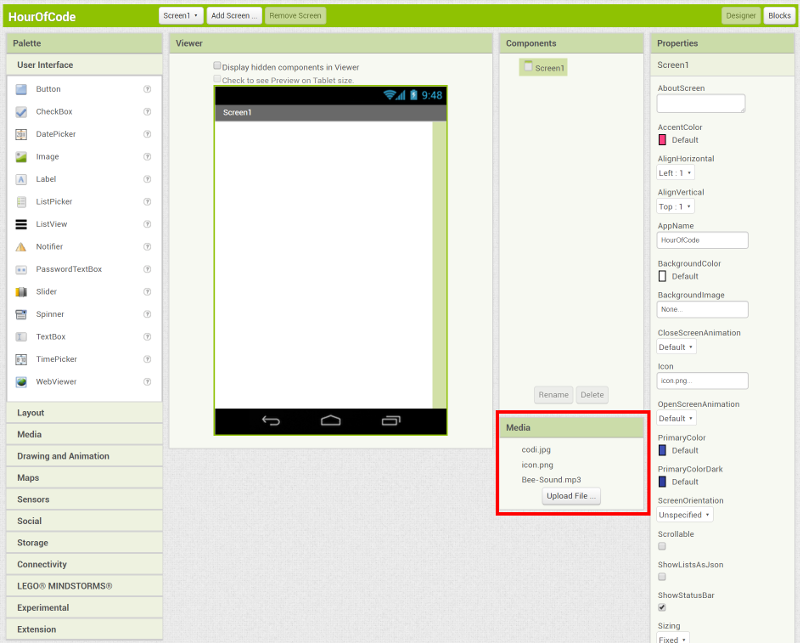Finally, the Properties window allows you to view or change any of the properties (or characteristics) of the currently selected component.
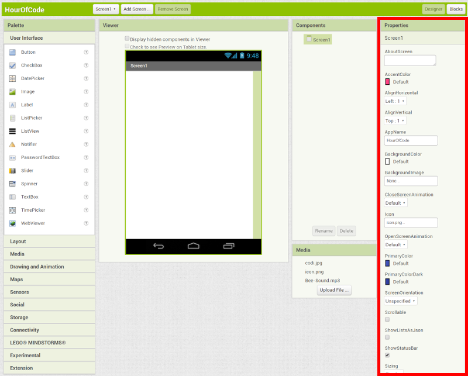First thing to do is uncheck the Scrollable property for Screen1 so we can keep the screen from scrolling.
Then drag in a Canvas from the Drawing and Animation drawer.
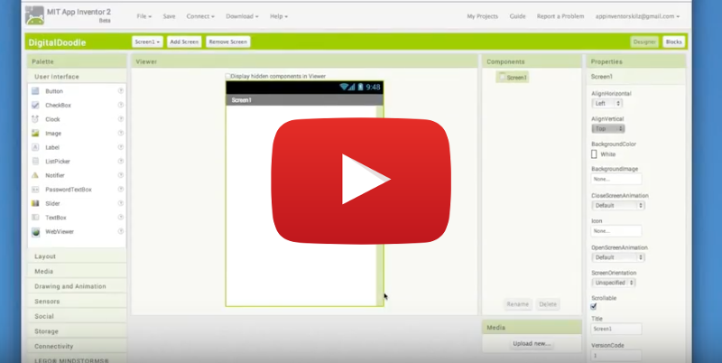In the Properties panel for Canvas1, click Height and set it to "Fill parent". Do the same for the Width property.
Then drag an Accelerometer component from the Sensors drawer into the Viewer.
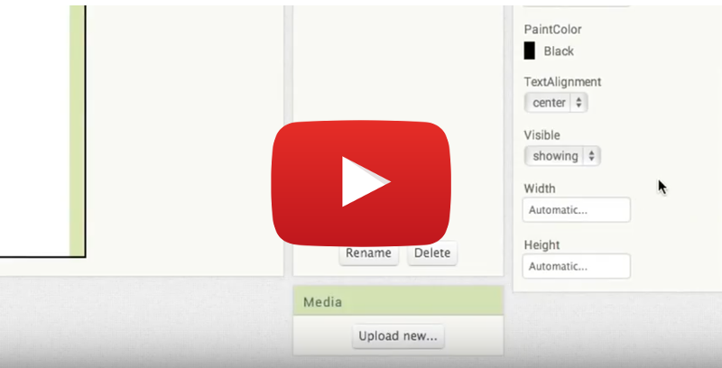Make sure you are in the Blocks Editor by clicking on the Blocks button in the top right of the screen.
Click on Canvas1 and drag a when Canvas1.Dragged event block to the Viewer.
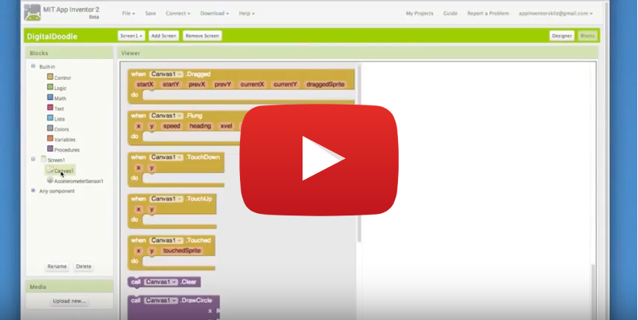Click on Canvas1 again. Click and drag the call Canvas1.DrawLine block and snap it into when Canvas1.Dragged.
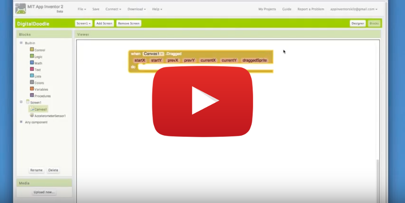Hover over "prevX" and click on get prevX. Add it to the "x1" socket of the call Canvas1.DrawLine block.
Next, hover over "prevY" and click on get prevY. Add it to the "y1" socket of the call Canvas1.DrawLine block.
Repeat with get currentX and get currentY, adding them to the "x2" and "y2" sockets.
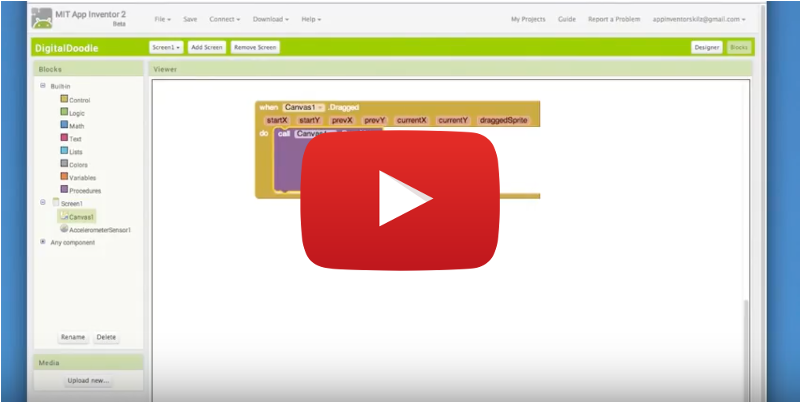Now test your app on your phone or tablet, or using the emulator in your browser. If you haven't set up your computer yet, follow the directions in the Setup tab above.
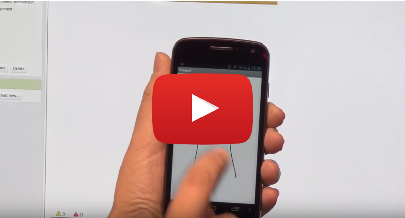Let's use the Accelerometer to detect shaking of the mobile device and erase the Canvas when that happens.
Drag out a when Accelerometer1.Shaking block.
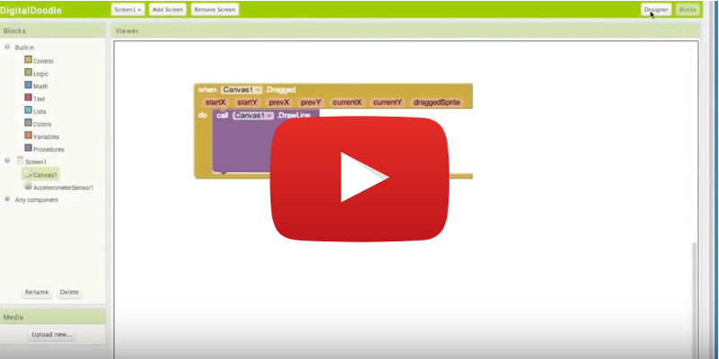Now drag out a Canvas1.Clear block and snap it into when Accelerometer1.Shaking.
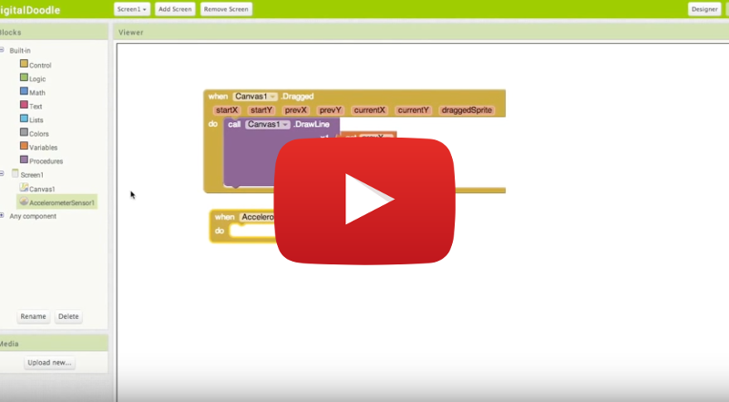Test it out! You can only do this if you are connected with a phone or tablet. This feature cannot be tested using the Emulator.
Next, try to extend your app using these suggestions or come up with your own!
All these ideas can be completed with the Paint Pot tutorial on the App Inventor site.
The possibilities are endless! It is now up to you to see how much fun you can have with your friends.
Congratulations! You've built a drawing app. You're an App Inventor!
Click here for your Hour of Code certificate!